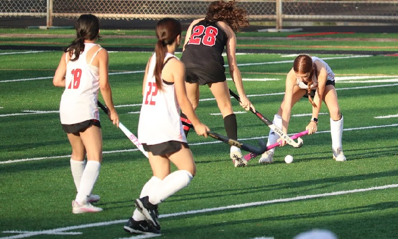

Sophomore year brought an unexpected turning point in my life when I decided to join the field hockey team on a whim alongside a few of my friends. None of us really knew what we were getting into. It was a spontaneous decision made more out of curiosity and a desire to do something together than any real passion for the sport.

But from the very first practice, something clicked. What started as a casual after-school activity quickly grew into one of the most important parts of my daily life, shaping my discipline, my friendships, and my sense of identity. The sport pushed me harder than I ever expected, and I found myself falling in love with the challenge of improving every single day. Field hockey went from a random choice to a defining part of who I am, and I can’t imagine my high school experience without it. Although it wasn’t easy with those 6 AM practices and insane conditioning sessions often felt brutal, the experience was incredibly rewarding. The bonds we formed as teammates made the early mornings worthwhile; we cheered each other on through tough drills and turned exhaustion into laughter, creating unforgettable memories together. Every practice filled us with excitement for the game, and the challenges we faced only strengthened my determination and resilience, solidifying field hockey as a significant part of my high school journey. (I'm number 22 in the picture!)I have a pet lizard named Tamarin, alongside 3 goldfish! I am also deathly afraid of butterflies and dogs.
Not a lot of people know this about me!
Having played piano for over ten years, I already had a deep relationship with music when I decided to pick up the guitar three years ago in middle school. I signed up for a guitar class at school, eager to explore a new side of my musicality, and it turned out to be one of the best decisions I ever made. The class was small and intimate, which made it feel less like a course and more like a tight-knit community of people who genuinely loved what they were doing. Together, we even took a trip to Disneyland, and those shared memories turned classmates into close friends. Even now, despite all of us moving on to different high schools, we've stayed in touch, a testament to the bond that class created. Since then, my passion for guitar has only deepened, leading me to buy three guitars of my own as I continued to grow as a player. I've also ventured into electric guitar, which opened up a whole new world of sound and expression that I hadn't experienced before. Guitar has become more than just an instrument to me. It's a creative outlet, a connection to people I love, and one of the most impactful parts of my life.
Each team has 11 players, including the goalkeeper. Players use curved sticks to hit a small, hard ball with the goal of scoring points in the opponent’s net. Basic rules include no foot contact (except the goalie) and using only the flat side of the stick to play the ball...Teams must pass or dribble the ball up the field while avoiding fouls such as dangerous play, high sticks, or obstructing an opponent. A goal can only be scored from inside the shooting circle. When a defending team commits a foul inside the circle, the offense earns a penalty corner, which is one of the main scoring opportunities. Play is also stopped for free hits, long corners, and sidelines depending on where the ball goes out or where fouls occur. Matches are played in four quarters, and the team with the most goals at the end wins.
Field hockey is usually played in a 3 line structure: forwards, midfielders, and defenders, plus the goalkeeper. Forwards focus on scoring and pressuring the opponent’s defense. Midfielders link the entire field, helping both the attack and defense while controlling possession. Defenders protect the circle, mark attackers, and move the ball safely out of the back. The goalkeeper wears protective gear and is the only player allowed to use feet, body, and stick to block shots inside the circle. Some teams also use specific roles like center forward, attacking mid, or sweeper depending on their strategy.